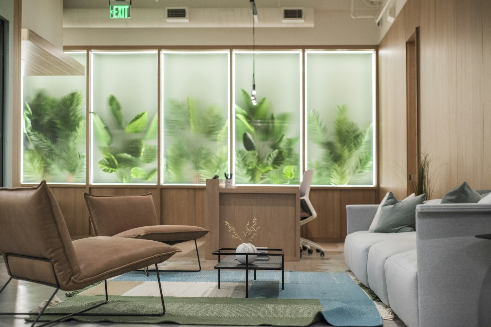
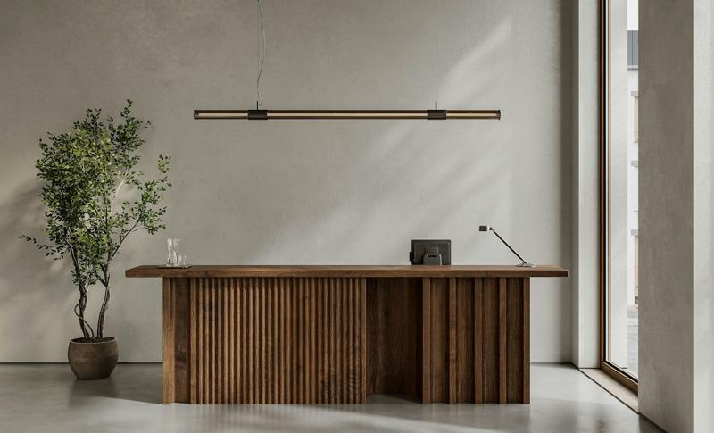
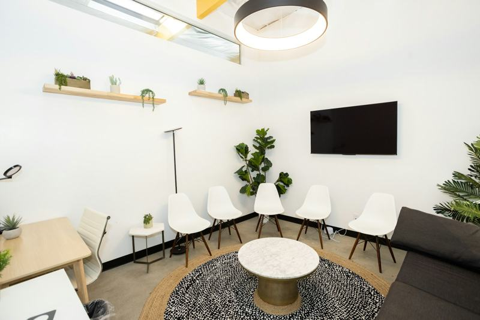

一般内科
風邪、発熱、せき、のどの痛み、腹痛、下痢、頭痛など。
ホームページの見本です。医院名・住所・電話番号・人物はすべて架空で、写真はイメージです。

写真はイメージです
木曜と土曜は午前だけの診療です。お休みの日は、表の「休」の所です。
| 時間 | 月 | 火 | 水 | 木 | 金 | 土 | 日祝 |
|---|---|---|---|---|---|---|---|
| 午前9:00〜12:00受付 11:45まで | 診療 | 診療 | 診療 | 診療 | 診療 | 診療 | 休 |
| 午後15:00〜18:00受付 17:45まで | 診療 | 診療 | 診療 | 休 | 診療 | 休 | 休 |
診療 お休み
ふだんの診療は予約なしで受診できます（健康診断・予防接種は予約制）。
見本の説明：お知らせ欄は、休診や予防接種のお知らせを載せる場所です。医院の方が直しやすい作りにしています。
受付からお会計まで、だいたいの流れです。分からないことは、受付でいつでもお尋ねください。
マイナ保険証などを出して、問診票に今の症状をお書きください。書きにくいときは、受付の者がお手伝いします。
看護師が体温と血圧を測り、お話を少し伺います。
診察のあと、必要に応じて血液検査などをします。
お会計のあと、処方箋をお渡しします（院外処方）。


中学生以上の方を診ています。どこにかかればよいか分からないときも、まずはご相談ください。
風邪、発熱、せき、のどの痛み、腹痛、下痢、頭痛など。
高血圧、脂質異常症、糖尿病、高尿酸血症の検査と、続けての治療。
花粉症、じんましん、食べ物や薬のアレルギーのご相談。血液検査で原因を調べることもできます。
特定健診（市の国保）、雇入時健診、各種診断書。予約制です。
インフルエンザ、肺炎球菌、新型コロナなど。在庫はお電話でご確認ください。
入院や詳しい検査が必要なときは、地域の病院へ紹介状をお書きします。
はじめまして。院長の見本です。このまちで育ち、2020年に、この場所で医院を開きました。
熱が下がらない、血圧が気になる、薬の飲み合わせが分からない。そんな「ちょっと聞きたい」ことに、ふだんの言葉でお答えするようにしています。
ご家族のことや、介護のことも、話せる範囲でお聞かせください。必要なときは、地域の病院や相談の窓口へおつなぎします。
見本内科クリニック 院長見本 一郎（架空）
体のことも、暮らしのことも。「ちょっと聞きたい」から、どうぞ。
イメージ写真
ふだんの診療は予約なしで受診できます。健康診断と予防接種は予約制ですので、お電話でお申し込みください。
医院の前に6台あります（うち1台は、車いすの方も乗り降りしやすい広い区画です）。満車のときは、隣のコインパーキングをご利用ください。
はい。診察室にご一緒に入っていただけます。お薬の飲み方などを、ご家族にも一緒にお伝えします。
現金のほか、クレジットカードと交通系ICカードがお使いになれます。
中学生以上の方を診ています。小学生以下のお子さんは、小児科のある医療機関をご案内します。
施設基準や医療情報取得加算など、院内に掲示しているお知らせを、公開するときにここへ載せます。